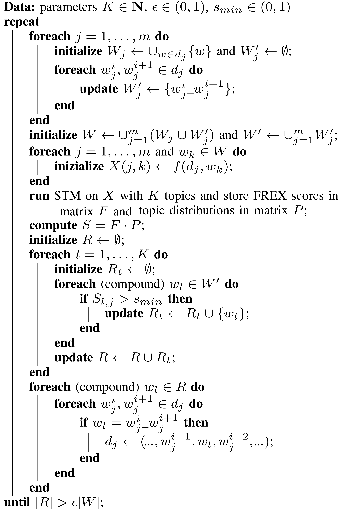

Within the scope of the IANCIS (Indexing of Anonimous Networks for Crime Information Search) ISEC Project , we performed a complete crawling of four famous ToR drug marketplaces: Alphabay, Crypto Market, East India and Nucleus. Since these marketplaces are grouped by category, extracting all text from this dataset yields a corpus of documents for which covariate information (the market and the category) are available.
Some of the IANCIS goals was: 1. to understand if there is any difference between markets/categories and, 2. to verify the presence of context-specific idioms and a topical slang. Topic Model (TM) can be a natural choice in order to analyze the corpus
We focus on a recent extension to TM called Structural Topic Modelling (STM), which allows incorporating tags, categories, metadata and other instrumental information accompanying the text archive. STM uses this covariate information to parametrize the prior distributions in such a way to potentially affect both topical prevalence and topical content. Like many other TM, STM use the Bag Of Word approach. However, BOW suffer from two limitations: the inability to detect topical multi-word expressions (i.e., phrasemes) and difficulty in visualizing/interpreting the obtained topics. So, regarding the IANCIS goals we need to extend STM to n-grams tokens.
The rationale: adding an idiom to the dictionary helps topics extraction and characterization only as long as the idiom and its components express different concepts that are relevant to different topics.
In practice: standard STM without covariates modeling is iteratively used to detect topic-relevant token-pairs which are merged into a single extended_word, up to a moment when no more relevant compound terms emerge.

Let \(D=\{d_1,\ldots,d_m\}\) be our corpus.
After preprocessing each document is formatted as an ordered list \(d_j = (w_j^1,\ldots,w_j^{n_j})\).
Given two consecutive tokens \(w_1\) and \(w_2\), \(w_1\_w_2\) denotes their concatenation (\(w_1\) and/or \(w_2\) may be the concatenation of any number of words).
The dictionary \(W\) is the union of the tokens and their concatenation. \(f(d_j,w)\) denotes the tf-idf of (compound) word \(w\) in document \(d_j\).
Let \(|W|\) be the total number of tokens and \(|D|\) the number of documents.
\(F\) is the \(|W| × K\) matrix whose entry \(F_{l,t}\) is the FREX score of token \(w_l\) with respect to topic \(t\).
\(P\) is the \(K × |D|\) matrix whose entry \(P_{t,j}\) is the probability of topic \(t\) appearing in document \(d_j\).
The product \(S = F·P\) yields a \(|W| × |D|\) matrix whose entry \(S_{l,j}\) is a score of the relevance of word \(w_l\) in document \(d_j\).
In words, the algorithm iteratively extends the corpus dictionary by adding all tokens \(w_j^i\_w_j^{i+1}\) obtained concatenating any two consecutive words/tokens in a document.
For each document \(d_j\) only compound tokens whose score \(S_{l,j}\) is above a pre-determined thresholds \(s_{min}\) are kept, and every occurrence of the corresponding pair in \(d_j\) is replaced by the unique extended token.
The algorithm stops when at least a fraction \(\epsilon\) of new relevant tokens are found in total.
Using empirical considerations for our corpus \(p_{min} = 0.01\), \(FREX_{min} = 0.95\) and then \(s_{min} = p_{min} \cdot FREX_{min} = 9.5 \cdot 10^{-3}\)
The dataset consists of 20491 html pages divided by category: Nucleus(8902), Alphabay(7472), Crypto Market (2435) and East India (1682).
We runned the final STM with covariate using 4 different tests (exclusivity, semantic coherence, heldout, and residual) in order to choose the number of topics \(K\) on the set \(\mathcal{K} = \{\) \(40\), \(44\), \(48\), \(52\), \(56\), \(58\), \(59\), \(60\), \(61\), \(62\), \(63\), \(64\), \(65\), \(66\), \(68\), \(69\), \(70\), \(71\) \(\}\). We choosed \(\mathcal{K}\) to produce a refined characterization of the dataset and to extract cross-category topics.
We setted K = 65 as a reasonable trade-off among the four metrics.
The highest score tokens were:
ice, meth, crystal_meth, shards, crystal_methamphetamine, 0.5g_crystal_methamphetamine
Using STM we found that in Nucleus (0.0218) the topic is 2 times more prevalent respect the others (0.0114).
Comparing our results with those from TopMine (https://goo.gl/zkuDAi) we verified that, for the most representative document of the topic, TopMine is able to find the same N-grams except 0.5g_crystal_methamphetamine
We found \(7\) different topics: \(1, 14, 22, 46, 50, 54, 56\).
Zooming to the \(56\) highest score tokens were:
shatter_pull_snap, sour_strawberry_diesel,
og_kush, ak_strain, indoor, scout, hybrid,
indica, sativa, chemicalscannabis_hashishbuds, content_thc_cbd, 14g_black_diamond.
In East India the topic \(56\) show a \(30\%\) increase respect to the others.
Like the topic \(30\), for topic \(56\), we verified that TopMine is able to find the same N-grams except 14g_black_diamond, shatter_pull_snap, ak_strain.
As an exploratory approach we opted for an ad-hoc heuristic based on iteratively apply standard STM to detect topic-relevant term-pairs and merge them into a single extended-word.
The coherence and the intelligibility of the obtained topics were significantly enhanced. Through a fine-grained and cross-market analysis of the thematic organization of the corpus we were able to gain relevant information about drug trade on ToR that goes well beyond those provided by the already available high level content classification.